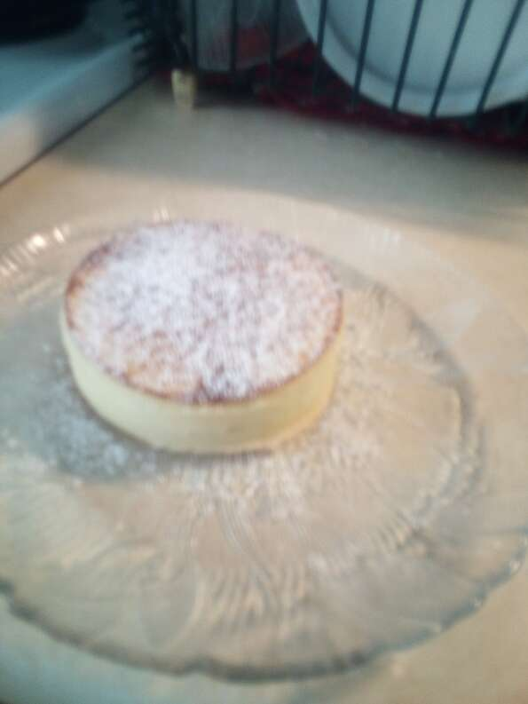

Pancakes

Description
Cakes for a Pan
Not necessarily a sweet dish
Ingredients
- 500g milk
- 300g flour
- 20g baking powder
- 50g Sugar
Directions
- Beat eggs until fluffy; beat in sugar and salt. In a separate bowl, stir flour and baking powder together.
Stir milk and flour mixture alternately into eggs, starting and ending with milk.
- Heat a lightly oiled griddle or frying pan over medium high heat. Pour or scoop the batter onto the griddle,
using approximately 1/4 cup for each pancake. Do not turn pancake until tiny holes appear all over the
uncooked side (top) of the pancake in the pan. Brown on both sides and serve hot.
Return to Main Page